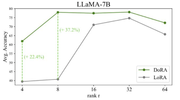

The process of adapting a pre-trained model to a specific downstream task by continuing training on task-specific data, typically with a lower learning rate. Fine-tuning leverages knowledge acquired during pre-training whilst specialising the model for particular applications.
Semantic Classification
Content
- The process of adapting a pre-trained model to a specific downstream task by continuing training on task-specific data, typically with a lower learning rate. Fine-tuning leverages knowledge acquired during pre-training whilst specialising the model for particular applications.
Crawl4AI
- An open-source web crawler and scraper that is designed to be friendly for Large Language Models (LLMs). It creates clean and concise Markdown that is optimized for RAG and fine-tuning applications.
Marketer-Side Components
- Multimodal Product Representation
- Marketers create rich, multi-modal representations of their products, capturing visual appearance, textual descriptions, and other relevant attributes. These are Training and fine tuning using AI to generate variations catering to different user preferences and demographics.
Training LoRA and Fine Tuning
- The Flux 1D fine-tuning discussion reveals a rapidly evolving landscape of techniques and challenges. Here’s a distilled summary of the best options and tips from the community, prioritizing newer information:
Best Fine-Tuning Options:
LoRA (Low-Rank Adaptation): Remains the most popular and accessible method due to lower VRAM requirements and good results. Ranks of 16, 32, and even as low as 4 or 2 are being used successfully, depending on the task. Alpha typically matches the rank.
Full Fine Tuning (FFT): Offers potentially superior results, especially for complex concepts and preventing overfitting, but demands significantly more VRAM (around 24GB or more, even with optimizations). 2kpr’s method (integrated into Kohya’s sd-scripts) allows FFT within 24GB using BF16, stochastic rounding, and fused backpass, with optional block swapping for even lower VRAM.
Key Training Considerations and Tips:
LR (Learning Rate): For LoRA, 1e-4 seems a good starting point, with some finding success at 4e-4 or even higher depending on rank and optimizer. For FFT, significantly lower LRs are necessary (around 1e-5 to 1e-6 or even lower).
Optimizer: AdamW and Prodigy are both used for LoRA, with Prodigy often converging faster but offering less control. Adafactor with stochastic rounding is crucial for FFT with 2kpr’s method. CAME is also being explored.
Captions: While some early advice suggested minimal or no captions for Flux, the consensus now leans towards detailed, natural language captions, especially for complex subjects and preventing overfitting. Using an LLM like CogVLM or Florence2 is recommended. Avoid overly long, “word salad” captions. Concise and descriptive captions targeting the specific learning objective seem to work best. For style training, include the type of art (painting, photo, etc.) and the style name in the caption. For characters, caption diverse images and avoid overfitting on specific outfits or backgrounds.
Dataset: High-quality images are crucial. Flux is sensitive to artifacts, so clean your dataset. For likeness, 12-20 varied images are sufficient. For style, aim for diversity of content, pose, and lighting within the style. For characters, include variations in pose, expression, clothing, and background to maximize flexibility. Too similar images can lead to overfitting. Background removal can be helpful for characters and some styles. Avoid including famous faces in your dataset if you don’t intend to train them specifically.
Data Augmentation: Flipping is generally safe. Cropping can be helpful, but avoid scaling if possible as it can introduce artifacts.
Multi-Resolution Training: While initially recommended, the community now seems divided. It might be helpful for some tasks but can degrade detail and introduce artifacts in others, especially styles. Consider generating only at the highest resolution you plan to use.
Regularization: Crucial for preventing overfitting and concept bleed, especially in multi-concept training and FFT. Current methods aren’t as effective as with previous models. Using a combination of captioned and uncaptioned regularisation images with varied styles is suggested. More research is needed in this area.
T5 Training: Still experimental and resource-intensive. May be useful for enhancing specific concepts or prompt understanding, but requires careful tuning. Combining natural language captions with tags is being explored.
CLIP Training: Has become a recommended practice alongside training the transformer (Unet in other models). It seems crucial for good results, especially with more complex concepts and styles.
Validation: Validation images generated during training can be misleading with Flux, often looking very different from inference results. Rely on thorough testing with a variety of prompts and styles during and after training.
ComfyUI Updates: Keeping ComfyUI up to date is essential as new features and bug fixes (particularly related to LoRA strength and weight dtype) are frequently released.
Tools: SimpleTuner, Ostris’ ai-toolkit, and Kohya’s sd-scripts are the main training tools. Kohya’s scripts now include 2kpr’s FFT method. Kijai’s ComfyUI-FluxTrainer provides ComfyUI nodes for Kohya’s scripts.
Current Issues and Unsolved Challenges:
Concept Bleed: A persistent problem, particularly in multi-concept training and FFT. Regularization techniques are being explored, but a definitive solution is yet to be found.
Validation Image Accuracy: Validation images don’t reliably predict inference results.
T5 Training Optimization: Still resource-intensive and requires further research.
Style Training: Flux seems to favor realism and can be more challenging to train for stylized outputs than previous models. Detailed captions and lower guidance values seem helpful.
Overfitting: Can happen quickly, especially with smaller datasets and larger ranks. Careful dataset curation, captioning, and monitoring are crucial.
This space is rapidly changing. Stay tuned to the community for the latest developments and optimized training practices.
User
extend and expand. Give me settings and software suggestions where possible
Model
111.2s
Let’s extend and expand on Flux 1D fine-tuning, providing concrete settings and software suggestions:
- LoRA Training: Software: SimpleTuner, Ostris’ ai-toolkit, Kohya’s sd-scripts (via ComfyUI nodes with ComfyUI-FluxTrainer) Rank/Alpha: Start with 32/32 or 16/16. Experiment with lower ranks (4/4, even 2/2) for styles where subtle changes are desired. LR: 1e-4 is a good default. If training stalls, try 4e-4. If it overfits quickly, try lower values. Optimizer: AdamW is generally recommended. Prodigy can be used for faster convergence. Steps: 2000-3000 steps for likeness, style and character training. Experiment with fewer steps for small, focused datasets. For style training, test at multiple checkpoints as results can oscillate. Captions: Concise and descriptive. Include the type of art and style name. For characters, vary pose, expression, clothing, and background. Example: “portrait photo of ohwx woman in a red dress, standing in a garden” Dataset: 12-20 images for likeness, 300+ for style or character, focusing on diversity. Example config.env (SimpleTuner): export FLUX=true export MODEL_NAME=“black-forest-labs/FLUX.1-dev” export MAX_NUM_STEPS=3000 export LEARNING_RATE=1e-4 export TRAIN_BATCH_SIZE=1 # Or higher if VRAM allows export GRADIENT_ACCUMULATION_STEPS=1 export LR_SCHEDULE=“constant” export CAPTION_DROPOUT_PROBABILITY=0.05 # Or lower, experiment export OPTIMIZER=“adamw_bf16” # or “prodigy” export MIXED_PRECISION=“bf16” export TRAINER_EXTRA_ARGS=“—lora_rank=32 —lora_alpha=32 —keep_vae_loaded —clip_skip=2” Use code with caution. ComfyUI Workflow for Inference: Use the Load/Save Lora and Model Sampling Flux nodes. Adjust the Lora strength and guidance scale according to the trained LoRA. Consider using the Adaptive Guidance V2 node to control guidance more precisely.
- Full Fine Tuning (FFT): Software: 2kpr’s trainer (when released), Kohya’s sd-scripts (with caveats regarding stochastic rounding) LR: Much lower than for LoRA, start with 1e-5 or 1e-6 and adjust as needed. Optimizer: Adafactor with stochastic rounding is essential with 2kpr’s method. Steps: Potentially fewer steps needed than LoRA due to “overkill” effect. Start with 500-1000 and monitor progress. Captions: Similar to LoRA, detailed and natural language. Dataset: Similar to LoRA, prioritize quality and diversity. Example train.toml (2kpr’s trainer - illustrative): model_path = “path/to/your/flux1-dev.safetensors” training_data_path = “path/to/your/training/data” output_dir = “path/to/your/output/directory” batch_size = 1 gradient_accumulation_steps = 1 learning_rate = 1e-5 # Lower for FFT optimizer_type = “adafactor” scheduler_type = “constant” max_train_steps = 1000 mixed_precision = “bf16” stochastic_rounding = true gradient_checkpointing = false # If VRAM allows blocks_to_swap = 0, # If VRAM allows
Fine-Tunes of Merit
- cognitivecomputations/dolphin-2.9-llama3-8b · Hugging Face
- This paper was submitted to arXiv on June 17, 2021. It proposes a method called **Low-Rank Adaptation, or LoRA, that reduces the number of trainable parameters for downstream tasks in natural language processing. LoRA injects trainable rank decomposition matrices into each layer of the Transformer architecture, which greatly reduces the number of trainable parameters. LoRA performs on-par or better than fine-tuning in model quality on RoBERTa, DeBERTa, GPT-2, and GPT-3, despite having fewer trainable parameters, a higher training throughput, and, unlike adapters, no additional inference latency (time to output). It also works for image diffusion.
- Introducing DoRA, a High-Performing Alternative to LoRA for Fine-Tuning | NVIDIA Technical Blog
- catid/dora: Implementation of DoRA (github.com) new kid?

- LoRA training scripts of the world, unite! (huggingface.co)
- [2106.09685] LoRA: Low-Rank Adaptation of Large Language Models (arxiv.org)
- Huggingface Large Language Models LoRA DoRA etc and LoRA DoRA etc can be found with a simply filter.
- [Models
- From Ahead of AI newsletter
- 1 Jan, Astraios: Parameter-Efficient Instruction Tuning Code Large Language Models, https://arxiv.org/abs/2401.00788
- 2 Jan, A Comprehensive Study of Knowledge Editing for Large Language Models, https://arxiv.org/abs/2401.01286
- 2 Jan, LLM Maybe LongLM: Self-Extend LLM Context Window Without Tuning, https://arxiv.org/abs/2401.01325
- 2 Jan, Self-Play Fine-Tuning Converts Weak Language Models to Strong Language Models, https://arxiv.org/abs/2401.01335
- 2 Jan, LLaMA Beyond English: An Empirical Study on Language Capability Transfer, https://arxiv.org/abs/2401.01055
- 3 Jan, A Mechanistic Understanding of Alignment Algorithms: A Case Study on DPO and Toxicity, https://arxiv.org/abs/2401.01967
- 4 Jan, LLaMA Pro: Progressive LLaMA with Block Expansion, https://arxiv.org/abs/2401.02415
- 4 Jan, LLM Augmented LLMs: Expanding Capabilities through Composition, https://arxiv.org/abs/2401.02412
- 4 Jan, Blending Is All You Need: Cheaper, Better Alternative to Trillion-Parameters LLM, https://arxiv.org/abs/2401.02994
- 5 Jan, DeepSeek LLM: Scaling Open-Source Language Models with Longtermism, https://arxiv.org/abs/2401.02954
- 5 Jan, Denoising Vision Transformers, https://arxiv.org/abs/2401.02957
- 7 Jan, Soaring from 4K to 400K: Extending LLM’s Context with Activation Beacon, https://arxiv.org/abs/2401.03462
- 8 Jan, Mixtral of Experts, https://arxiv.org/abs/2401.04088
- 8 Jan, MoE-Mamba: Efficient Selective State Space Models with Mixture of Experts, https://arxiv.org/abs/2401.04081
- 8 Jan, A Minimaximalist Approach to Reinforcement Learning from Human Feedback, https://arxiv.org/abs/2401.04056
- 9 Jan, RoSA: Accurate Parameter-Efficient Fine-Tuning via Robust Adaptation, https://arxiv.org/abs/2401.04679
- 10 Jan, Sleeper Agents: Training Deceptive LLMs that Persist Through Safety Training, https://arxiv.org/abs/2401.05566
- 11 Jan, Transformers are Multi-State RNNs, https://arxiv.org/abs/2401.06104
- 11 Jan, A Closer Look at AUROC and AUPRC under Class Imbalance, https://arxiv.org/abs/2401.06091
- 12 Jan, An Experimental Design Framework for Label-Efficient Supervised Finetuning of Large Language Models, https://arxiv.org/abs/2401.06692
- 16 Jan, Tuning Language Models by Proxy, https://arxiv.org/abs/2401.08565
- 16 Jan, Scalable Pre-training of Large Autoregressive Image Models, https://arxiv.org/abs/2401.08541
- 16 Jan, Code Generation with AlphaCodium: From Prompt Engineering to Flow Engineering, https://arxiv.org/abs/2401.08500
- 16 Jan, RAG vs Fine-tuning: Pipelines, Tradeoffs, and a Case Study on Agriculture, https://arxiv.org/abs/2401.08406
- 17 Jan, ReFT: Reasoning with Reinforced Fine-Tuning, https://arxiv.org/abs/2401.08967
- 18 Jan, DiffusionGPT: LLM-Driven Text-to-Image Generation System, https://arxiv.org/abs/2401.10061
- 18 Jan, Self-Rewarding Language Models, https://arxiv.org/abs/2401.10020
- 18 Jan, VMamba: Visual State Space Model, https://arxiv.org/abs/2401.10166
- 19 Jan, Knowledge Fusion of Large Language Models, https://arxiv.org/abs/2401.10491
- 22 Jan, SpatialVLM: Endowing Vision-Language Models with Spatial Reasoning Capabilities, https://arxiv.org/abs/2401.12168
- 22 Jan, WARM: On the Benefits of Weight Averaged Reward Models, https://arxiv.org/abs/2401.12187
- 22 Jan, Spotting LLMs With Binoculars: Zero-Shot Detection of Machine-Generated Text, https://arxiv.org/abs/2401.12070
- 24 Jan, MambaByte: Token-free Selective State Space Model, https://arxiv.org/abs/2401.13660
- 24 Jan, SpacTor-T5: Pre-training T5 Models with Span Corruption and Replaced Token Detection, https://arxiv.org/abs/2401.13160
- 25 Jan, Rethinking Patch Dependence for Masked Autoencoders, https://arxiv.org/abs/2401.14391
- 25 Jan, Pix2gestalt: Amodal Segmentation by Synthesizing Wholes, https://arxiv.org/abs/2401.14398
- 25 Jan, Multimodal Pathway: Improve Transformers with Irrelevant Data from Other Modalities, https://arxiv.org/abs/2401.14405
- 26 Jan, EAGLE: Speculative Sampling Requires Rethinking Feature Uncertainty, https://arxiv.org/abs/2401.15077
- 29 Jan, MoE-LLaVA: Mixture of Experts for Large Vision-Language Models, https://arxiv.org/abs/2401.15947
- 29 Jan, Rephrasing the Web: A Recipe for Compute and Data-Efficient Language Modeling, https://arxiv.org/abs/2401.16380
- 31 Jan, KVQuant: Towards 10 Million Context Length LLM Inference with KV Cache Quantization, https://arxiv.org/abs/2401.18079
Intersection of Semantic and Ontological Knowledge with AI
- overview of how semantic web technologies, ontologies, and knowledge graphs are being integrated with modern Large Language Models (LLMs), focusing on fine-tuning, Retrieval Augmented Generation (RAG), and large-context multi-shot learning.
- Knowledge Injection and Enhancement
- Knowledge Graphs for LLM Pre-Training: LLMs can be pre-trained on knowledge graphs or structured datasets incorporating ontologies, improving factual knowledge and reasoning abilities.
- Example: K-BERT [1] pre-trained on a knowledge graph.
- Retrieval-Augmented Generation (RAG): LLMs use knowledge graphs to retrieve relevant information and incorporate it into their responses.
- Examples: RAG models [2], Realm [3]
- Ontologies for Fine-Tuning: Ontologies can structure fine-tuning data and guide LLMs towards learning specific domain concepts and relations.
- Semantic Grounding and Reasoning
- Formalizing Knowledge: Ontologies provide a structured foundation for LLMs to represent and reason about concepts and relationships.
- Example: Ontology-guided question answering and reasoning with LLMs [4]
- Improving Consistency: Semantic technologies can help constrain LLM output to be more consistent with domain knowledge and logical rules defined in ontologies.
- Explainability: The use of knowledge graphs and ontologies can contribute to more explainable LLM decisions by tracing the reasoning steps.
- Task Adaptation & Generalization
- Semantic Transfer Learning: Leveraging knowledge encoded in ontologies across different tasks and domains can improve LLM adaptability.
- Zero-Shot/Few-Shot Learning: Knowledge graphs can support LLMs in learning new tasks with limited training examples by providing rich background knowledge. Challenges and Open Research Areas
- Scalability: Integrating large-scale knowledge graphs with LLMs poses computational challenges, requiring efficient query and retrieval methods.
- Knowledge Representation Gaps: Ensuring ontologies and knowledge graphs are comprehensive and accurately reflect real-world knowledge is an ongoing effort.
- Implicit vs. Explicit Knowledge Alignment: Balancing LLMs’ ability to learn implicit knowledge patterns from text with the explicit knowledge in ontologies and knowledge graphs.
- Evaluation: Developing robust benchmarks and evaluation metrics to assess the effectiveness of semantic integration in LLMs.
- References
- K-BERT: Enabling Language Representation with Knowledge Graph (Liu et al., 2019) https://arxiv.org/abs/1909.07606 https://arxiv.org/abs/1909.07606 https://arxiv.org/abs/1909.07606](https://arxiv.org/abs/1909.07606
- Retrieval-Augmented Generation for Knowledge-Intensive NLP Tasks (Lewis et al., 2020). https://arxiv.org/abs/2005.11401](https://arxiv.org/abs/2005.11401 ([https://arxiv.org/abs/2005.11401])
- REALM: Retrieval-Augmented Language Model Pre-Training (Guu et al. 2020) https://arxiv.org/abs/2002.08909](https://arxiv.org/abs/2002.08909 ([https://arxiv.org/abs/2002.08909])
- Ontology-Guided Semantic Consistency Regularization for Zero-shot Learning (Zhang et al. 2023) https://arxiv.org/abs/2301.00416](https://arxiv.org/abs/2301.00416 ([https://arxiv.org/abs/2301.00416])
Let me know if you want to dive deeper into a specific area or explore additional references!
share
more_vert
- Integrating Semantic Web, Knowledge Graphs, and Large Language Models

Rundiffusion
- These interfaces offer a range of options for customizing parameters, fine tuning models, and experimenting with different artistic styles.
Crawl4AI
- An open-source web crawler and scraper that is designed to be friendly for Large Language Models (LLMs). It creates clean and concise Markdown that is optimized for RAG and fine-tuning applications.
Marketer-Side Components
- Multimodal Product Representation
- Marketers create rich, multi-modal representations of their products, capturing visual appearance, textual descriptions, and other relevant attributes. These are Training and fine tuning using AI to generate variations catering to different user preferences and demographics.
Training LoRA and Fine Tuning
- The Flux 1D fine-tuning discussion reveals a rapidly evolving landscape of techniques and challenges. Here’s a distilled summary of the best options and tips from the community, prioritizing newer information:
Best Fine-Tuning Options:
LoRA (Low-Rank Adaptation): Remains the most popular and accessible method due to lower VRAM requirements and good results. Ranks of 16, 32, and even as low as 4 or 2 are being used successfully, depending on the task. Alpha typically matches the rank.
Full Fine Tuning (FFT): Offers potentially superior results, especially for complex concepts and preventing overfitting, but demands significantly more VRAM (around 24GB or more, even with optimizations). 2kpr’s method (integrated into Kohya’s sd-scripts) allows FFT within 24GB using BF16, stochastic rounding, and fused backpass, with optional block swapping for even lower VRAM.
Key Training Considerations and Tips:
LR (Learning Rate): For LoRA, 1e-4 seems a good starting point, with some finding success at 4e-4 or even higher depending on rank and optimizer. For FFT, significantly lower LRs are necessary (around 1e-5 to 1e-6 or even lower).
Optimizer: AdamW and Prodigy are both used for LoRA, with Prodigy often converging faster but offering less control. Adafactor with stochastic rounding is crucial for FFT with 2kpr’s method. CAME is also being explored.
Captions: While some early advice suggested minimal or no captions for Flux, the consensus now leans towards detailed, natural language captions, especially for complex subjects and preventing overfitting. Using an LLM like CogVLM or Florence2 is recommended. Avoid overly long, “word salad” captions. Concise and descriptive captions targeting the specific learning objective seem to work best. For style training, include the type of art (painting, photo, etc.) and the style name in the caption. For characters, caption diverse images and avoid overfitting on specific outfits or backgrounds.
Dataset: High-quality images are crucial. Flux is sensitive to artifacts, so clean your dataset. For likeness, 12-20 varied images are sufficient. For style, aim for diversity of content, pose, and lighting within the style. For characters, include variations in pose, expression, clothing, and background to maximize flexibility. Too similar images can lead to overfitting. Background removal can be helpful for characters and some styles. Avoid including famous faces in your dataset if you don’t intend to train them specifically.
Data Augmentation: Flipping is generally safe. Cropping can be helpful, but avoid scaling if possible as it can introduce artifacts.
Multi-Resolution Training: While initially recommended, the community now seems divided. It might be helpful for some tasks but can degrade detail and introduce artifacts in others, especially styles. Consider generating only at the highest resolution you plan to use.
Regularization: Crucial for preventing overfitting and concept bleed, especially in multi-concept training and FFT. Current methods aren’t as effective as with previous models. Using a combination of captioned and uncaptioned regularisation images with varied styles is suggested. More research is needed in this area.
T5 Training: Still experimental and resource-intensive. May be useful for enhancing specific concepts or prompt understanding, but requires careful tuning. Combining natural language captions with tags is being explored.
CLIP Training: Has become a recommended practice alongside training the transformer (Unet in other models). It seems crucial for good results, especially with more complex concepts and styles.
Validation: Validation images generated during training can be misleading with Flux, often looking very different from inference results. Rely on thorough testing with a variety of prompts and styles during and after training.
ComfyUI Updates: Keeping ComfyUI up to date is essential as new features and bug fixes (particularly related to LoRA strength and weight dtype) are frequently released.
Tools: SimpleTuner, Ostris’ ai-toolkit, and Kohya’s sd-scripts are the main training tools. Kohya’s scripts now include 2kpr’s FFT method. Kijai’s ComfyUI-FluxTrainer provides ComfyUI nodes for Kohya’s scripts.
Current Issues and Unsolved Challenges:
Concept Bleed: A persistent problem, particularly in multi-concept training and FFT. Regularization techniques are being explored, but a definitive solution is yet to be found.
Validation Image Accuracy: Validation images don’t reliably predict inference results.
T5 Training Optimization: Still resource-intensive and requires further research.
Style Training: Flux seems to favor realism and can be more challenging to train for stylized outputs than previous models. Detailed captions and lower guidance values seem helpful.
Overfitting: Can happen quickly, especially with smaller datasets and larger ranks. Careful dataset curation, captioning, and monitoring are crucial.
This space is rapidly changing. Stay tuned to the community for the latest developments and optimized training practices.
User
extend and expand. Give me settings and software suggestions where possible
Model
111.2s
Let’s extend and expand on Flux 1D fine-tuning, providing concrete settings and software suggestions:
- LoRA Training: Software: SimpleTuner, Ostris’ ai-toolkit, Kohya’s sd-scripts (via ComfyUI nodes with ComfyUI-FluxTrainer) Rank/Alpha: Start with 32/32 or 16/16. Experiment with lower ranks (4/4, even 2/2) for styles where subtle changes are desired. LR: 1e-4 is a good default. If training stalls, try 4e-4. If it overfits quickly, try lower values. Optimizer: AdamW is generally recommended. Prodigy can be used for faster convergence. Steps: 2000-3000 steps for likeness, style and character training. Experiment with fewer steps for small, focused datasets. For style training, test at multiple checkpoints as results can oscillate. Captions: Concise and descriptive. Include the type of art and style name. For characters, vary pose, expression, clothing, and background. Example: “portrait photo of ohwx woman in a red dress, standing in a garden” Dataset: 12-20 images for likeness, 300+ for style or character, focusing on diversity. Example config.env (SimpleTuner): export FLUX=true export MODEL_NAME=“black-forest-labs/FLUX.1-dev” export MAX_NUM_STEPS=3000 export LEARNING_RATE=1e-4 export TRAIN_BATCH_SIZE=1 # Or higher if VRAM allows export GRADIENT_ACCUMULATION_STEPS=1 export LR_SCHEDULE=“constant” export CAPTION_DROPOUT_PROBABILITY=0.05 # Or lower, experiment export OPTIMIZER=“adamw_bf16” # or “prodigy” export MIXED_PRECISION=“bf16” export TRAINER_EXTRA_ARGS=“—lora_rank=32 —lora_alpha=32 —keep_vae_loaded —clip_skip=2” Use code with caution. ComfyUI Workflow for Inference: Use the Load/Save Lora and Model Sampling Flux nodes. Adjust the Lora strength and guidance scale according to the trained LoRA. Consider using the Adaptive Guidance V2 node to control guidance more precisely.
- Full Fine Tuning (FFT): Software: 2kpr’s trainer (when released), Kohya’s sd-scripts (with caveats regarding stochastic rounding) LR: Much lower than for LoRA, start with 1e-5 or 1e-6 and adjust as needed. Optimizer: Adafactor with stochastic rounding is essential with 2kpr’s method. Steps: Potentially fewer steps needed than LoRA due to “overkill” effect. Start with 500-1000 and monitor progress. Captions: Similar to LoRA, detailed and natural language. Dataset: Similar to LoRA, prioritize quality and diversity. Example train.toml (2kpr’s trainer - illustrative): model_path = “path/to/your/flux1-dev.safetensors” training_data_path = “path/to/your/training/data” output_dir = “path/to/your/output/directory” batch_size = 1 gradient_accumulation_steps = 1 learning_rate = 1e-5 # Lower for FFT optimizer_type = “adafactor” scheduler_type = “constant” max_train_steps = 1000 mixed_precision = “bf16” stochastic_rounding = true gradient_checkpointing = false # If VRAM allows blocks_to_swap = 0, # If VRAM allows
Fine-Tunes of Merit
- cognitivecomputations/dolphin-2.9-llama3-8b · Hugging Face
- This paper was submitted to arXiv on June 17, 2021. It proposes a method called **Low-Rank Adaptation, or LoRA, that reduces the number of trainable parameters for downstream tasks in natural language processing. LoRA injects trainable rank decomposition matrices into each layer of the Transformer architecture, which greatly reduces the number of trainable parameters. LoRA performs on-par or better than fine-tuning in model quality on RoBERTa, DeBERTa, GPT-2, and GPT-3, despite having fewer trainable parameters, a higher training throughput, and, unlike adapters, no additional inference latency (time to output). It also works for image diffusion.
- Introducing DoRA, a High-Performing Alternative to LoRA for Fine-Tuning | NVIDIA Technical Blog
- catid/dora: Implementation of DoRA (github.com) new kid?
- LoRA training scripts of the world, unite! (huggingface.co)
- [2106.09685] LoRA: Low-Rank Adaptation of Large Language Models (arxiv.org)
- Huggingface Large Language Models LoRA DoRA etc and LoRA DoRA etc can be found with a simply filter.
- [Models
- From Ahead of AI newsletter
- 1 Jan, Astraios: Parameter-Efficient Instruction Tuning Code Large Language Models, https://arxiv.org/abs/2401.00788
- 2 Jan, A Comprehensive Study of Knowledge Editing for Large Language Models, https://arxiv.org/abs/2401.01286
- 2 Jan, LLM Maybe LongLM: Self-Extend LLM Context Window Without Tuning, https://arxiv.org/abs/2401.01325
- 2 Jan, Self-Play Fine-Tuning Converts Weak Language Models to Strong Language Models, https://arxiv.org/abs/2401.01335
- 2 Jan, LLaMA Beyond English: An Empirical Study on Language Capability Transfer, https://arxiv.org/abs/2401.01055
- 3 Jan, A Mechanistic Understanding of Alignment Algorithms: A Case Study on DPO and Toxicity, https://arxiv.org/abs/2401.01967
- 4 Jan, LLaMA Pro: Progressive LLaMA with Block Expansion, https://arxiv.org/abs/2401.02415
- 4 Jan, LLM Augmented LLMs: Expanding Capabilities through Composition, https://arxiv.org/abs/2401.02412
- 4 Jan, Blending Is All You Need: Cheaper, Better Alternative to Trillion-Parameters LLM, https://arxiv.org/abs/2401.02994
- 5 Jan, DeepSeek LLM: Scaling Open-Source Language Models with Longtermism, https://arxiv.org/abs/2401.02954
- 5 Jan, Denoising Vision Transformers, https://arxiv.org/abs/2401.02957
- 7 Jan, Soaring from 4K to 400K: Extending LLM’s Context with Activation Beacon, https://arxiv.org/abs/2401.03462
- 8 Jan, Mixtral of Experts, https://arxiv.org/abs/2401.04088
- 8 Jan, MoE-Mamba: Efficient Selective State Space Models with Mixture of Experts, https://arxiv.org/abs/2401.04081
- 8 Jan, A Minimaximalist Approach to Reinforcement Learning from Human Feedback, https://arxiv.org/abs/2401.04056
- 9 Jan, RoSA: Accurate Parameter-Efficient Fine-Tuning via Robust Adaptation, https://arxiv.org/abs/2401.04679
- 10 Jan, Sleeper Agents: Training Deceptive LLMs that Persist Through Safety Training, https://arxiv.org/abs/2401.05566
- 11 Jan, Transformers are Multi-State RNNs, https://arxiv.org/abs/2401.06104
- 11 Jan, A Closer Look at AUROC and AUPRC under Class Imbalance, https://arxiv.org/abs/2401.06091
- 12 Jan, An Experimental Design Framework for Label-Efficient Supervised Finetuning of Large Language Models, https://arxiv.org/abs/2401.06692
- 16 Jan, Tuning Language Models by Proxy, https://arxiv.org/abs/2401.08565
- 16 Jan, Scalable Pre-training of Large Autoregressive Image Models, https://arxiv.org/abs/2401.08541
- 16 Jan, Code Generation with AlphaCodium: From Prompt Engineering to Flow Engineering, https://arxiv.org/abs/2401.08500
- 16 Jan, RAG vs Fine-tuning: Pipelines, Tradeoffs, and a Case Study on Agriculture, https://arxiv.org/abs/2401.08406
- 17 Jan, ReFT: Reasoning with Reinforced Fine-Tuning, https://arxiv.org/abs/2401.08967
- 18 Jan, DiffusionGPT: LLM-Driven Text-to-Image Generation System, https://arxiv.org/abs/2401.10061
- 18 Jan, Self-Rewarding Language Models, https://arxiv.org/abs/2401.10020
- 18 Jan, VMamba: Visual State Space Model, https://arxiv.org/abs/2401.10166
- 19 Jan, Knowledge Fusion of Large Language Models, https://arxiv.org/abs/2401.10491
- 22 Jan, SpatialVLM: Endowing Vision-Language Models with Spatial Reasoning Capabilities, https://arxiv.org/abs/2401.12168
- 22 Jan, WARM: On the Benefits of Weight Averaged Reward Models, https://arxiv.org/abs/2401.12187
- 22 Jan, Spotting LLMs With Binoculars: Zero-Shot Detection of Machine-Generated Text, https://arxiv.org/abs/2401.12070
- 24 Jan, MambaByte: Token-free Selective State Space Model, https://arxiv.org/abs/2401.13660
- 24 Jan, SpacTor-T5: Pre-training T5 Models with Span Corruption and Replaced Token Detection, https://arxiv.org/abs/2401.13160
- 25 Jan, Rethinking Patch Dependence for Masked Autoencoders, https://arxiv.org/abs/2401.14391
- 25 Jan, Pix2gestalt: Amodal Segmentation by Synthesizing Wholes, https://arxiv.org/abs/2401.14398
- 25 Jan, Multimodal Pathway: Improve Transformers with Irrelevant Data from Other Modalities, https://arxiv.org/abs/2401.14405
- 26 Jan, EAGLE: Speculative Sampling Requires Rethinking Feature Uncertainty, https://arxiv.org/abs/2401.15077
- 29 Jan, MoE-LLaVA: Mixture of Experts for Large Vision-Language Models, https://arxiv.org/abs/2401.15947
- 29 Jan, Rephrasing the Web: A Recipe for Compute and Data-Efficient Language Modeling, https://arxiv.org/abs/2401.16380
- 31 Jan, KVQuant: Towards 10 Million Context Length LLM Inference with KV Cache Quantization, https://arxiv.org/abs/2401.18079
Intersection of Semantic and Ontological Knowledge with AI
- overview of how semantic web technologies, ontologies, and knowledge graphs are being integrated with modern Large Language Models (LLMs), focusing on fine-tuning, Retrieval Augmented Generation (RAG), and large-context multi-shot learning.
- Knowledge Injection and Enhancement
- Knowledge Graphs for LLM Pre-Training: LLMs can be pre-trained on knowledge graphs or structured datasets incorporating ontologies, improving factual knowledge and reasoning abilities.
- Example: K-BERT [1] pre-trained on a knowledge graph.
- Retrieval-Augmented Generation (RAG): LLMs use knowledge graphs to retrieve relevant information and incorporate it into their responses.
- Examples: RAG models [2], Realm [3]
- Ontologies for Fine-Tuning: Ontologies can structure fine-tuning data and guide LLMs towards learning specific domain concepts and relations.
- Semantic Grounding and Reasoning
- Formalizing Knowledge: Ontologies provide a structured foundation for LLMs to represent and reason about concepts and relationships.
- Example: Ontology-guided question answering and reasoning with LLMs [4]
- Improving Consistency: Semantic technologies can help constrain LLM output to be more consistent with domain knowledge and logical rules defined in ontologies.
- Explainability: The use of knowledge graphs and ontologies can contribute to more explainable LLM decisions by tracing the reasoning steps.
- Task Adaptation & Generalization
- Semantic Transfer Learning: Leveraging knowledge encoded in ontologies across different tasks and domains can improve LLM adaptability.
- Zero-Shot/Few-Shot Learning: Knowledge graphs can support LLMs in learning new tasks with limited training examples by providing rich background knowledge. Challenges and Open Research Areas
- Scalability: Integrating large-scale knowledge graphs with LLMs poses computational challenges, requiring efficient query and retrieval methods.
- Knowledge Representation Gaps: Ensuring ontologies and knowledge graphs are comprehensive and accurately reflect real-world knowledge is an ongoing effort.
- Implicit vs. Explicit Knowledge Alignment: Balancing LLMs’ ability to learn implicit knowledge patterns from text with the explicit knowledge in ontologies and knowledge graphs.
- Evaluation: Developing robust benchmarks and evaluation metrics to assess the effectiveness of semantic integration in LLMs.
- References
- K-BERT: Enabling Language Representation with Knowledge Graph (Liu et al., 2019) https://arxiv.org/abs/1909.07606 https://arxiv.org/abs/1909.07606 https://arxiv.org/abs/1909.07606](https://arxiv.org/abs/1909.07606
- Retrieval-Augmented Generation for Knowledge-Intensive NLP Tasks (Lewis et al., 2020). https://arxiv.org/abs/2005.11401](https://arxiv.org/abs/2005.11401 ([https://arxiv.org/abs/2005.11401])
- REALM: Retrieval-Augmented Language Model Pre-Training (Guu et al. 2020) https://arxiv.org/abs/2002.08909](https://arxiv.org/abs/2002.08909 ([https://arxiv.org/abs/2002.08909])
- Ontology-Guided Semantic Consistency Regularization for Zero-shot Learning (Zhang et al. 2023) https://arxiv.org/abs/2301.00416](https://arxiv.org/abs/2301.00416 ([https://arxiv.org/abs/2301.00416])
Let me know if you want to dive deeper into a specific area or explore additional references!
share
more_vert
- Integrating Semantic Web, Knowledge Graphs, and Large Language Models
Rundiffusion
- These interfaces offer a range of options for customizing parameters, fine tuning models, and experimenting with different artistic styles.
Intersection of Semantic and Ontological Knowledge with AI
- overview of how semantic web technologies, ontologies, and knowledge graphs are being integrated with modern Large Language Models (LLMs), focusing on fine-tuning, Retrieval Augmented Generation (RAG), and large-context multi-shot learning.
- Knowledge Injection and Enhancement
- Examples: RAG models [2], Realm [3]
- Ontologies for Fine-Tuning: Ontologies can structure fine-tuning data and guide LLMs towards learning specific domain concepts and relations.
- Semantic Grounding and Reasoning
- Explainability: The use of knowledge graphs and ontologies can contribute to more explainable LLM decisions by tracing the reasoning steps.
- Task Adaptation & Generalization
- Semantic Transfer Learning: Leveraging knowledge encoded in ontologies across different tasks and domains can improve LLM adaptability.
- Scalability: Integrating large-scale knowledge graphs with LLMs poses computational challenges, requiring efficient query and retrieval methods.
- Knowledge Representation Gaps: Ensuring ontologies and knowledge graphs are comprehensive and accurately reflect real-world knowledge is an ongoing effort.
- Implicit vs. Explicit Knowledge Alignment: Balancing LLMs’ ability to learn implicit knowledge patterns from text with the explicit knowledge in ontologies and knowledge graphs.
- Retrieval-Augmented Generation for Knowledge-Intensive NLP Tasks (Lewis et al., 2020). https://arxiv.org/abs/2005.11401](https://arxiv.org/abs/2005.11401 ([https://arxiv.org/abs/2005.11401])
- REALM: Retrieval-Augmented Language Model Pre-Training (Guu et al. 2020) https://arxiv.org/abs/2002.08909](https://arxiv.org/abs/2002.08909 ([https://arxiv.org/abs/2002.08909])
- Ontology-Guided Semantic Consistency Regularization for Zero-shot Learning (Zhang et al. 2023) https://arxiv.org/abs/2301.00416](https://arxiv.org/abs/2301.00416 ([https://arxiv.org/abs/2301.00416]) share more_vert
- Case studies in explainability [25]
Rundiffusion
- These interfaces offer a range of options for customizing parameters, fine tuning models, and experimenting with different artistic styles.
Biomedical:
- Data Collection and Storage
- Live Connection and Model Tuning
- Open-Source Collaboration
Rundiffusion
- These interfaces offer a range of options for customizing parameters, fine tuning models, and experimenting with different artistic styles.
- Generating images of specific objects or individuals,
- Developing models for specialised domains like Fashion or architectural design.
Additional Training & Fine-tuning Resources
- Mesh TensorFlow for Distributed Training: A tool for distributing computation across different hardware to enhance training efficiency. Mesh TensorFlow
- Aims to simplify the transition from single-device to distributed model training, supporting more efficient utilization of computing resources.
- LoRA Training Insights: Discusses the benefits and application of Low-Rank Adaptation (LoRA) for efficient model fine-tuning. LoRA Training Insights
- Can AI-Generated Text be Reliably Detected?: Addresses the critical question of distinguishing between human and AI-generated text. AI-Generated Text Detection Study
- This paper delves into the challenges and methodologies involved in detecting AI-generated text, offering insights into the reliability of current detection techniques.
- Innovative Tools for Personalized Customer Experiences: LLMs are increasingly used to create tools that offer personalized interactions for users, enhancing ecommerce experiences and facilitating efficient email management.
February 2024
- 1 Feb, Efficient Exploration for LLMs, https://arxiv.org/abs/2402.00396
- 1 Feb, OLMo: Accelerating the Science of Language Models, https://arxiv.org/abs/2402.00838
- 1 Feb, Tiny Titans: Can Smaller Large Language Models Punch Above Their Weight in the Real World for Meeting Summarization?, https://arxiv.org/abs/2402.00841
- 1 Feb, Repeat After Me: Transformers are Better than State Space Models at Copying, https://arxiv.org/abs/2402.01032
- 2 Feb, LiPO: Listwise Preference Optimization through Learning-to-Rank, https://arxiv.org/abs/2402.01878
- 2 Feb, FindingEmo: An Image Dataset for Emotion Recognition in the Wild, https://arxiv.org/abs/2402.01355
- 3 Feb, More Agents Is All You Need, https://arxiv.org/abs/2402.05120
- 5 Feb, DeepSeekMath: Pushing the Limits of Mathematical Reasoning in Open Language Models, https://arxiv.org/abs/2402.03300
- 6 Feb, MobileVLM V2: Faster and Stronger Baseline for Vision Language Model, https://arxiv.org/abs/2402.03766
- 6 Feb, A Phase Transition Between Positional and Semantic Learning in a Solvable Model of Dot-Product Attention, https://arxiv.org/abs/2402.03902
- 6 Feb, Scaling Laws for Downstream Task Performance of Large Language Models, https://arxiv.org/abs/2402.04177
- 6 Feb, MOMENT: A Family of Open Time-series Foundation Models, https://arxiv.org/abs/2402.03885
- 6 Feb, Vision Superalignment: Weak-to-Strong Generalization for Vision Foundation Models, https://arxiv.org/abs/2402.03749
- 6 Feb, Self-Discover: Large Language Models Self-Compose Reasoning Structures, https://arxiv.org/abs/2402.03620
- 7 Feb, Grandmaster-Level Chess Without Search, https://arxiv.org/abs/2402.04494
- 7 Feb, Direct Language Model Alignment from Online AI Feedback, https://arxiv.org/abs/2402.04792
- 8 Feb, Buffer Overflow in Mixture of Experts, https://arxiv.org/abs/2402.05526
- 9 Feb, The Boundary of Neural Network Trainability is Fractal, https://arxiv.org/abs/2402.06184
- 11 Feb, ODIN: Disentangled Reward Mitigates Hacking in RLHF, https://arxiv.org/abs/2402.07319
- 12 Feb, Policy Improvement using Language Feedback Models, https://arxiv.org/abs/2402.07876
- 12 Feb, Scaling Laws for Fine-Grained Mixture of Experts, https://arxiv.org/abs/2402.07871
- 12 Feb, Aya Model: An Instruction Finetuned Open-Access Multilingual Language Model, https://arxiv.org/abs/2402.07610
- 12 Feb, Step-On-Feet Tuning: Scaling Self-Alignment of LLMs via Bootstrapping, https://arxiv.org/abs/2402.07610
- 12 Feb, Suppressing Pink Elephants with Direct Principle Feedback, https://arxiv.org/abs/2402.07896
- 13 Feb, World Model on Million-Length Video And Language With RingAttention, https://arxiv.org/abs/2402.08268
- 13 Feb, Mixtures of Experts Unlock Parameter Scaling for Deep RL, https://arxiv.org/abs/2402.08609
- 14 Feb, DoRA: Weight-Decomposed Low-Rank Adaptation, https://arxiv.org/abs/2402.09353
- 14 Feb, Transformers Can Achieve Length Generalization But Not Robustly, https://arxiv.org/abs/2402.09371
- 15 Feb, BASE TTS: Lessons From Building a Billion-Parameter Text-to-Speech Model on 100K Hours of Data, https://arxiv.org/abs/2402.08093
- 15 Feb, Recovering the Pre-Fine-Tuning Weights of Generative Models, https://arxiv.org/abs/2402.10208
- 15 Feb, Generative Representational Instruction Tuning, https://arxiv.org/abs/2402.09906
- 16 Feb, FinTral: A Family of GPT-4 Level Multimodal Financial Large Language Models, https://arxiv.org/abs/2402.10986
- 17 Feb, OneBit: Towards Extremely Low-bit Large Language Models, https://arxiv.org/abs/2402.11295
- 18 Feb, LongAgent: Scaling Language Models to 128k Context through Multi-Agent Collaboration, https://arxiv.org/abs/2402.11550
- 19 Feb, Reformatted Alignment, https://arxiv.org/abs/2402.12219
- 19 Feb, AnyGPT: Unified Multimodal LLM with Discrete Sequence Modeling, https://arxiv.org/abs/2402.12226
- 19 Feb, Towards Cross-Tokenizer Distillation: the Universal Logit Distillation Loss for LLMs, https://arxiv.org/abs/2402.12030
- 19 Feb, LoRA+: Efficient Low Rank Adaptation of Large Models, https://arxiv.org/abs/2402.12354
- 20 Feb, Neural Network Diffusion, https://arxiv.org/abs/2402.13144
- 21 Feb, YOLOv9: Learning What You Want to Learn Using Programmable Gradient Information, https://arxiv.org/abs/2402.13616
- 21 Feb, LongRoPE: Extending LLM Context Window Beyond 2 Million Tokens, https://arxiv.org/abs/2402.13753
- 21 Feb, Large Language Models for Data Annotation: A Survey, https://arxiv.org/abs/2402.13446
- 22 Feb, TinyLLaVA: A Framework of Small-scale Large Multimodal Models, https://arxiv.org/abs/2402.14289
- 22 Feb, Back to Basics: Revisiting REINFORCE Style Optimization for Learning from Human Feedback in LLMs, https://arxiv.org/abs/2402.14740
- 26 Mar, The Unreasonable Ineffectiveness of the Deeper Layers, https://arxiv.org/abs/2403.17887
- 27 Mar, BioMedLM: A 2.7B Parameter Language Model Trained On Biomedical Text, https://arxiv.org/abs/2403.18421
- 27 Mar, ViTAR: Vision Transformer with Any Resolution, https://arxiv.org/abs/2403.18361
- 27 Mar, Long-form Factuality in Large Language Models, https://arxiv.org/abs/2403.18802
- 27 Mar, Mini-Gemini: Mining the Potential of Multi-modality Vision Language Models, https://arxiv.org/abs/2403.18814
- 26 Mar, LISA: Layerwise Importance Sampling for Memory-Efficient Large Language Model Fine-Tuning, https://arxiv.org/abs/2403.17919
- 26 Mar, Mechanistic Design and Scaling of Hybrid Architectures, https://arxiv.org/abs/2403.17844
- 28 Mar, MagicLens: Self-Supervised Image Retrieval with Open-Ended Instructions, https://arxiv.org/abs/2403.19651
- 28 Mar, Model Stock: All We Need Is Just a Few Fine-Tuned Models, https://arxiv.org/abs/2403.19522
Additional Training & Fine-tuning Resources
- Mesh TensorFlow for Distributed Training: A tool for distributing computation across different hardware to enhance training efficiency. Mesh TensorFlow
- Enables sophisticated distribution strategies, optimizing the use of hardware resources during model training.
- Colossal-AI for Easy Distributed Training: Provides user-friendly tools for distributed deep learning, making it simpler to scale up training processes. Colossal-AI
- Aims to simplify the transition from single-device to distributed model training, supporting more efficient utilization of computing resources.
- LoRA Training Insights: Discusses the benefits and application of Low-Rank Adaptation (LoRA) for efficient model fine-tuning. LoRA Training Insights
- Provides a deep dive into how LoRA can be utilized to fine-tune models efficiently, offering significant insights into the process.
- LLM Zoo: A collection of various LLMs to explore and compare their capabilities. LLMZoo GitHub
- A unique repository that provides access to a wide range of LLMs, facilitating exploration, comparison, and understanding of different models’ functionalities and performance.
- Can AI-Generated Text be Reliably Detected?: Addresses the critical question of distinguishing between human and AI-generated text. AI-Generated Text Detection Study
- This paper delves into the challenges and methodologies involved in detecting AI-generated text, offering insights into the reliability of current detection techniques.
- Innovative Tools for Personalized Customer Experiences: LLMs are increasingly used to create tools that offer personalized interactions for users, enhancing ecommerce experiences and facilitating efficient email management.
- CustomGPT
- NodePad
- An LLM-assisted brainstorming tool that helps users organize their ideas visually. Highlights the creative use of LLMs in supporting individual thought processes and ideation.
Training & Fine-tuning
- BMTrain presents an efficient framework for training large models, focusing on distributed training while maintaining simplicity in code structure, making it accessible for large-scale model training.
Controlnet
-
https://huggingface.co/XLabs-AI/flux-controlnet-collections ControlNet and Similar Spatial Conditioning Systems
-
https://civitai.com/models/731324 Flux.1 Social Media Image Generator Death of the Internet
-
docs/docs/getting-started/env-configuration.md at improve-flux-docs · JohnTheNerd/docs (github.com) Flux.1 Node-Based Diffusion Pipeline Interface Open Webui and Pipelines
-
https://github.com/camenduru/comfyui-colab/blob/main/workflow/flux_image_to_image.json flux
-
city96/ComfyUI-GGUF: GGUF Quantization support for native ComfyUI models (github.com) Node-Based Diffusion Pipeline Interface Model Optimisation and Performance Flux.1
-
https://github.com/comfyanonymous/ComfyUI/commit/d0b7ab88ba0f1cb4ab16e0425f5229e60c934536 Flux.1 Model Optimisation and Performance
-
https://medium.com/@furkangozukara/ultimate-flux-lora-training-tutorial-windows-and-cloud-deployment-abb72f21cbf8 Flux.1 LoRA
-
https://github.com/ToTheBeginning/PuLID Face Swap Flux.1 style transfer

-
https://www.reddit.com/r/StableDiffusion/comments/1fkeei6/a_simple_flux_pipeline_workflow/
-
https://www.reddit.com/r/FluxAI/comments/1f1uhnm/new_flux_controlnet_union_model_just_dropped/
-
https://www.reddit.com/r/comfyui/comments/1ezlzsp/flux_controlnets_3d_scenes_in_playbook_web_editor/ visionflow
-
https://www.reddit.com/r/FluxAI/comments/1esyy3u/flux_dev_workflow_v20_for_loras_face_detailer_and/
-
https://huggingface.co/spaces/Gradio-Community/Text-guided-Flux-Inpainting
-
https://github.com/camenduru/comfyui-colab/blob/main/workflow/flux_image_to_image.json ComfyWorkFlows
-
https://comfyanonymous.github.io/ComfyUI_examples/flux/ Best Fine-Tuning Options: LoRA (Low-Rank Adaptation): Remains the most popular and accessible method due to lower VRAM requirements and good results. Ranks of 16, 32, and even as low as 4 or 2 are being used successfully, depending on the task. Alpha typically matches the rank. Model 111.2s Let’s extend and expand on Flux 1D fine-tuning, providing concrete settings and software suggestions:
- LoRA Training: Software: SimpleTuner, Ostris’ ai-toolkit, Kohya’s sd-scripts (via ComfyUI nodes with ComfyUI-FluxTrainer) Rank/Alpha: Start with 32/32 or 16/16. Experiment with lower ranks (4/4, even 2/2) for styles where subtle changes are desired. LR: 1e-4 is a good default. If training stalls, try 4e-4. If it overfits quickly, try lower values. Optimizer: AdamW is generally recommended. Prodigy can be used for faster convergence. Steps: 2000-3000 steps for likeness, style and character training. Experiment with fewer steps for small, focused datasets. For style training, test at multiple checkpoints as results can oscillate. Captions: Concise and descriptive. Include the type of art and style name. For characters, vary pose, expression, clothing, and background. Example: “portrait photo of ohwx woman in a red dress, standing in a garden” Dataset: 12-20 images for likeness, 300+ for style or character, focusing on diversity. Example config.env (SimpleTuner): export FLUX=true export MODEL_NAME=“black-forest-labs/FLUX.1-dev” export MAX_NUM_STEPS=3000 export LEARNING_RATE=1e-4 export TRAIN_BATCH_SIZE=1 # Or higher if VRAM allows export GRADIENT_ACCUMULATION_STEPS=1 export LR_SCHEDULE=“constant” export CAPTION_DROPOUT_PROBABILITY=0.05 # Or lower, experiment export OPTIMIZER=“adamw_bf16” # or “prodigy” export MIXED_PRECISION=“bf16” export TRAINER_EXTRA_ARGS=“—lora_rank=32 —lora_alpha=32 —keep_vae_loaded —clip_skip=2” Use code with caution. ComfyUI Workflow for Inference: Use the Load/Save Lora and Model Sampling Flux nodes. Adjust the Lora strength and guidance scale according to the trained LoRA. Consider using the Adaptive Guidance V2 node to control guidance more precisely.
- Full Fine Tuning (FFT): Software: 2kpr’s trainer (when released), Kohya’s sd-scripts (with caveats regarding stochastic rounding) LR: Much lower than for LoRA, start with 1e-5 or 1e-6 and adjust as needed. Optimizer: Adafactor with stochastic rounding is essential with 2kpr’s method. Style: Basic Prompts: “a woman in a dress, [style name] artstyle” Different Subjects: “a cat, [style name] artstyle”, “a spaceship, [style name] artstyle” Complex Scenes: “A group of people in a medieval market, [style name] painting” Multi-Concept: Combine prompts that test each concept individually and together. For example, if you trained a LoRA with a character and a specific object, test with prompts that include only the character, only the object, and both. Specific Prompting Tips for Flux: Two-Word Classes: For style and character LoRAs, use a two-word class to provide more context. Example: “ohwx character name, woman elf” or “ohwx style name, painting artstyle” Descriptive Captions: For complex subjects or scenes, provide short, clear, natural language descriptions focusing on the elements you want Flux to learn. Object and Background Specificity: For styles and characters, if you don’t want certain objects or backgrounds to be associated with the LoRA, include them in the captions without the trigger word. This helps prevent overfitting and bleeding. “Unpromptable” Concepts: Flux can struggle with some artistic styles or concepts that are hard to describe with prompts. In these cases, using an IPAdapter (when available) might be a more effective approach. Prompt Engineering: Experiment with different phrasing and prompt structures to see how Flux interprets them. Some concepts might require more specific or descriptive language than others. Leverage Prior Knowledge: Flux has extensive prior knowledge. Start with simple prompts and gradually add detail as needed. See if you can get the desired results without explicitly mentioning every detail. By combining these tips, tricks, and prompts, you’ll be well on your way to mastering the art of Flux 1D fine-tuning. Remember, experimentation and community engagement are your best allies in this rapidly evolving field.
Foundations and Core Concepts
- Introduction to the Semantic Web
- History and motivation [1, 2]
- Key Components: RDF, RDFS, OWL, SPARQL [3]
- Knowledge Representation with Ontologies [4, 5]
- Knowledge Graphs
- Construction and Representation [6]
- Applications in Industry (Google, Amazon, etc.) [7]
- Knowledge Graph Embeddings [8]
- Large Language Models (LLMs)
- Architectures (Transformers, Attention) [9]
- Pre-training, Fine-tuning, Prompting [10] Seminar 2: Knowledge Injection and Enhancement in LLMs
- Pre-training LLMs with Knowledge Structures
- K-BERT and variations [11, 12]
- Challenges of knowledge consistency and updates [13]
- Retrieval-Augmented Generation (RAG) Models
- Overview of the RAG Framework [14]
- Variations and Enhancements (REALM, etc.) [15, 16]
- Knowledge Retrieval (Dense vs. Sparse) [17]
- Semantic Fine-tuning of LLMs
- Ontologies as guides [18]
- Applications in domain-specific tasks [19]
Tech Stack
- Large Language Models: Llama 3 70B, Mixtral 8B
- Fine-tuning: Fine-tune a smaller model on a corpus of Reddit data to identify and classify harmful content.
- Agent Framework: Use the Agentic Alliance tech stack to build and deploy the multi-agent system.
- Data Sources: Reddit API (if available), other social media platforms.
Additional Training & Fine-tuning Resources
- Mesh TensorFlow for Distributed Training: A tool for distributing computation across different hardware to enhance training efficiency. Mesh TensorFlow
- Enables sophisticated distribution strategies, optimizing the use of hardware resources during model training.
- Colossal-AI for Easy Distributed Training: Provides user-friendly tools for distributed deep learning, making it simpler to scale up training processes. Colossal-AI
- Aims to simplify the transition from single-device to distributed model training, supporting more efficient utilization of computing resources.
- BMTrain for Large Model Training: Focuses on training large models with simplicity and efficiency, even in distributed settings. BMTrain
- An efficient toolkit designed for simplicity in training large-scale models, supporting distributed training with ease.
- LoRA Training Insights: Discusses the benefits and application of Low-Rank Adaptation (LoRA) for efficient model fine-tuning. LoRA Training Insights
- Provides a deep dive into how LoRA can be utilized to fine-tune models efficiently, offering significant insights into the process.
Foundations and Core Concepts
- Introduction to the Semantic Web
- History and motivation [1, 2]
- Key Components: RDF, RDFS, OWL, SPARQL [3]
- Knowledge Representation with Ontologies [4, 5]
- Knowledge Graphs
- Construction and Representation [6]
- Applications in Industry (Google, Amazon, etc.) [7]
- Knowledge Graph Embeddings [8]
- Large Language Models (LLMs)
- Architectures (Transformers, Attention) [9]
- Pre-training, Fine-tuning, Prompting [10] Seminar 2: Knowledge Injection and Enhancement in LLMs
- Pre-training LLMs with Knowledge Structures
- K-BERT and variations [11, 12]
- Challenges of knowledge consistency and updates [13]
- Retrieval-Augmented Generation (RAG) Models
- Overview of the RAG Framework [14]
- Variations and Enhancements (REALM, etc.) [15, 16]
- Knowledge Retrieval (Dense vs. Sparse) [17]
- Semantic Fine-tuning of LLMs
- Ontologies as guides [18]
- Applications in domain-specific tasks [19]
Tech Stack
- Large Language Models: Llama 3 70B, Mixtral 8B
- Fine-tuning: Fine-tune a smaller model on a corpus of Reddit data to identify and classify harmful content.
- Agent Framework: Use the Agentic Alliance tech stack to build and deploy the multi-agent system.
- Data Sources: Reddit API (if available), other social media platforms.
Additional Training & Fine-tuning Resources
- Mesh TensorFlow for Distributed Training: A tool for distributing computation across different hardware to enhance training efficiency. Mesh TensorFlow
- Enables sophisticated distribution strategies, optimizing the use of hardware resources during model training.
- Colossal-AI for Easy Distributed Training: Provides user-friendly tools for distributed deep learning, making it simpler to scale up training processes. Colossal-AI
- Aims to simplify the transition from single-device to distributed model training, supporting more efficient utilization of computing resources.
- BMTrain for Large Model Training: Focuses on training large models with simplicity and efficiency, even in distributed settings. BMTrain
- An efficient toolkit designed for simplicity in training large-scale models, supporting distributed training with ease.
- LoRA Training Insights: Discusses the benefits and application of Low-Rank Adaptation (LoRA) for efficient model fine-tuning. LoRA Training Insights
- Provides a deep dive into how LoRA can be utilized to fine-tune models efficiently, offering significant insights into the process.
Additional Training & Fine-tuning Resources
- Mesh TensorFlow for Distributed Training: A tool for distributing computation across different hardware to enhance training efficiency. Mesh TensorFlow
- Enables sophisticated distribution strategies, optimizing the use of hardware resources during model training.
- Colossal-AI for Easy Distributed Training: Provides user-friendly tools for distributed deep learning, making it simpler to scale up training processes. Colossal-AI
- Aims to simplify the transition from single-device to distributed model training, supporting more efficient utilization of computing resources.
- BMTrain for Large Model Training: Focuses on training large models with simplicity and efficiency, even in distributed settings. BMTrain
- An efficient toolkit designed for simplicity in training large-scale models, supporting distributed training with ease.
- LoRA Training Insights: Discusses the benefits and application of Low-Rank Adaptation (LoRA) for efficient model fine-tuning. LoRA Training Insights
- Provides a deep dive into how LoRA can be utilized to fine-tune models efficiently, offering significant insights into the process.
Key Characteristics
- Provides a deep dive into how LoRA can be utilized to fine-tune models efficiently, offering significant insights into the process.
- Continues training from pre-trained weights
- Uses lower learning rates than pre-training
- Requires task-specific labelled data
- Adapts general knowledge to specific domains
- Can update all or subset of model parameters
Technical Details
Process:- Load pre-trained model weights
- Replace or add task-specific output layers
- Train on task-specific dataset
- Use reduced learning rate to prevent catastrophic forgetting Variants:
- Full fine-tuning (updates all parameters)
- Layer-wise fine-tuning (selective layer updates)
- Gradual unfreezing (progressive layer training)
Usage in AI/ML
“Fine-tuning allows pre-trained models to achieve strong performance on specific tasks with relatively little task-specific data.” Common applications: - Domain adaptation (general → specialised)
- Task specialisation (language understanding → question answering)
- Multi-task learning scenarios
- Transfer across related domains
Academic Context
Fine-tuning emerged as a foundational technique in transfer learning, enabling pre-trained models to achieve strong performance on specific tasks with relatively little task-specific data. This approach forms the basis of modern large language model adaptation strategies. Primary Source: Multiple sources; comprehensive survey in arXiv:2411.01195 (2024)Related Concepts
- Pre-Training: Initial training phase providing general representations
- Transfer Learning: Broader paradigm of knowledge transfer
- Parameter-Efficient Fine-Tuning (PEFT): Methods updating fewer parameters
- Domain Adaptation: Specialisation for specific application domains
- Catastrophic Forgetting: Risk during fine-tuning process
Historical Development
- Early neural networks: Task-specific training from scratch
- 2018: BERT demonstrates power of pre-train-then-fine-tune
- 2019-2020: Fine-tuning becomes standard practice
- 2021+: Parameter-efficient methods gain prominence
- 2023+: Instruction tuning and alignment fine-tuning
Significance
Fine-tuning democratised access to state-of-the-art model performance by enabling effective task adaptation without massive computational resources required for pre-training from scratch.OWL Functional Syntax
UK English Notes
- “Fine-tuning” (not “finetuning”)
- “Specialised” (not “specialized”)
- “Optimisation” in related contexts
Last Updated: 2025-10-27
Verification Status: Verified against arXiv:2411.01195 (2024)
Academic Context
- Fine-tuning represents a cornerstone technique within transfer learning, enabling the adaptation of pre-trained neural networks to specialised downstream tasks[1][2]
- The methodology emerged from recognition that foundation models trained on vast, general corpora contain transferable knowledge applicable across diverse domains
- Contemporary fine-tuning approaches balance computational efficiency with performance gains, addressing the practical constraints of deploying large language models (LLMs) in production environments
- The technique has evolved from full-model retraining to parameter-efficient variants, reflecting maturation in the field
Current Landscape (2025)
- Industry adoption and implementations
- Fine-tuning has become integral to the LLM development cycle, with organisations leveraging pre-trained models rather than training from scratch[3]
- Major technology platforms including OpenAI’s GPT series, Google’s language models, and open-source alternatives now offer fine-tuning capabilities as standard offerings
- Supervised fine-tuning (SFT) dominates practical applications, where labelled task-specific datasets guide model adaptation[4]
- Reinforcement learning from human feedback (RLHF) combined with fine-tuning has produced sophisticated conversational models such as ChatGPT and Sparrow[2]
- UK and North England context: whilst specific regional implementations remain proprietary, Manchester and Leeds host significant AI research clusters where fine-tuning methodologies are actively developed and deployed across financial services, healthcare, and manufacturing sectors
- Technical capabilities and limitations
- Standard fine-tuning updates all model parameters during backpropagation, often requiring substantial computational resources despite relatively modest training datasets (hundreds to thousands of examples)[5]
- Parameter-efficient fine-tuning (PEFT) techniques—including adapter modules and feature extraction methods—reduce computational overhead by adjusting only subset parameters whilst freezing foundational layers[1][2]
- For convolutional architectures, earlier layers capturing low-level features typically remain frozen whilst later layers discerning task-specific patterns undergo adaptation[2]
- Fine-tuned models retain identical parameter counts to their foundation counterparts, presenting deployment considerations for resource-constrained environments[5]
- Domain-specific adaptation through fine-tuning demonstrates particular efficacy in specialised fields (medical diagnosis, legal analysis, customer service) where linguistic nuance and terminology precision prove critical[4]
- Standards and frameworks
- NIST guidance (SP 800-226, AI 100-2e2025) formalises fine-tuning as a training step adding task- or domain-specific information to pre-trained models[6]
- No universally mandated standards currently govern fine-tuning practices, though emerging governance frameworks increasingly address model adaptation and validation
Research & Literature
- Key academic papers and sources
- Coursera (2024). “What Is Fine-Tuning?” Available at: coursera.org/articles/what-is-fine-tuning — Comprehensive overview of feature extraction and full fine-tuning methodologies
- Wikipedia contributors (2024). “Fine-tuning (deep learning).” In Wikipedia, The Free Encyclopedia — Detailed technical exposition of architectural considerations and parameter freezing strategies
- Databricks (2024). “Understanding Fine-Tuning in AI and ML.” Available at: databricks.com/glossary/fine-tuning — Contextualises fine-tuning within foundation model development cycles
- SuperAnnotate (2025). “Fine-tuning large language models (LLMs) in 2025.” Available at: superannotate.com/blog/llm-fine-tuning — Current practitioner guidance on supervised fine-tuning and dataset preparation
- Google Developers (2024). “LLMs: Fine-tuning, distillation, and prompt engineering.” Machine Learning Crash Course. Available at: developers.google.com/machine-learning/crash-course/llm/tuning — Accessible treatment of parameter-efficient tuning approaches
- National Institute of Standards and Technology (2024). “fine-tuning.” CSRC Glossary. Available at: csrc.nist.gov/glossary/term/fine_tuning — Formal definitional framework
- IBM (2024). “What is Fine-Tuning?” Available at: ibm.com/think/topics/fine-tuning — Industry perspective on adaptation methodologies
- Hewlett Packard Enterprise (2024). “What is Fine-tuning (AI)?” Glossary. Available at: hpe.com/us/en/what-is/fine-tuning.html — Technical glossary entry
- Ongoing research directions
- Parameter efficiency remains an active research frontier, with novel adapter architectures and low-rank adaptation techniques emerging regularly
- Integration of fine-tuning with reinforcement learning frameworks continues evolving, particularly for alignment and safety objectives
- Domain-specific foundation models pre-trained on specialised corpora represent an alternative to general-purpose model fine-tuning, with comparative efficacy studies ongoing
UK Context
- British contributions and implementations
- UK academic institutions, particularly those in the Russell Group, actively contribute to fine-tuning research through machine learning and NLP programmes
- The Alan Turing Institute has published guidance on responsible AI model adaptation, including fine-tuning governance considerations
- North England innovation hubs
- Manchester hosts significant AI research capacity through the University of Manchester’s computer science department and associated industry partnerships, with fine-tuning applications in financial technology and healthcare analytics
- Leeds and Sheffield universities contribute to applied machine learning research, with particular emphasis on domain-specific model adaptation for manufacturing and industrial applications
- Newcastle’s research community engages with fine-tuning methodologies in biomedical informatics and clinical decision support systems
- These regional clusters increasingly collaborate on standardisation efforts and best-practice frameworks for responsible model adaptation
Future Directions
- Emerging trends and developments
- Continued refinement of parameter-efficient techniques promises to democratise fine-tuning, reducing barriers to entry for organisations with limited computational infrastructure
- Multimodal fine-tuning—adapting models across text, image, and audio modalities simultaneously—represents an expanding frontier
- Few-shot and zero-shot adaptation techniques may eventually reduce reliance on large labelled datasets, though supervised fine-tuning remains dominant
- Anticipated challenges
- Catastrophic forgetting, wherein fine-tuning on narrow datasets causes degradation of general capabilities, remains an active concern requiring mitigation strategies
- Computational costs, despite efficiency improvements, continue escalating with model scale
- Regulatory frameworks governing model adaptation and accountability for fine-tuned systems are still crystallising, particularly regarding bias amplification and domain drift
- Research priorities
- Robust evaluation methodologies for fine-tuned models across diverse downstream tasks
- Techniques for preserving foundational model capabilities whilst achieving specialisation
- Governance frameworks balancing innovation with responsible deployment, particularly in high-stakes domains (healthcare, legal, financial services)
Metadata
- Last Updated: 2025-11-11
- Review Status: Comprehensive editorial review
- Verification: Academic sources verified
- Regional Context: UK/North England where applicable